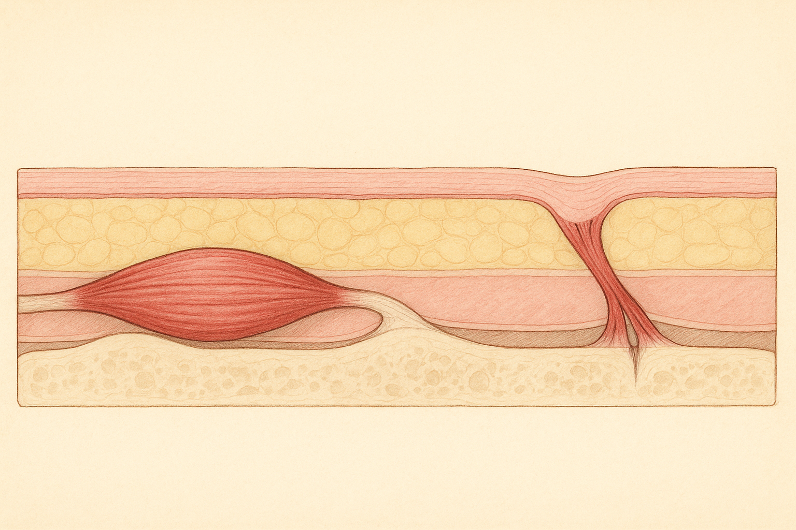
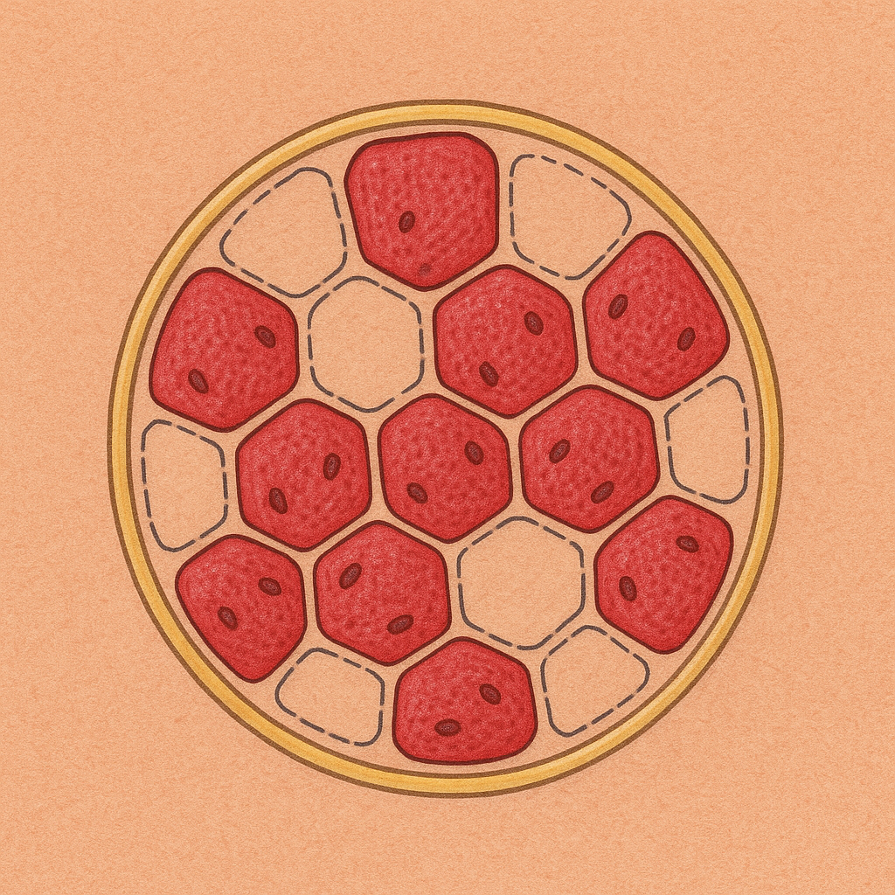
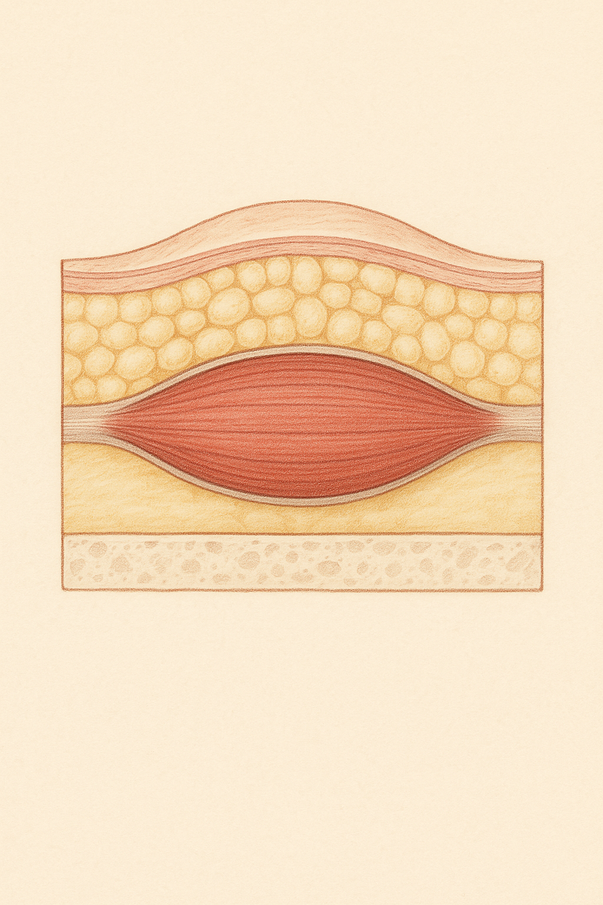

Review below. Reply approve to publish the Facebook post, or tell me edits.

<!-- SEO slug: does-face-yoga-work | Meta description: Does face yoga work? A plain reading of the facial exercises research: what the best-known face yoga study found, what it could not show, and how long before you would see face yoga results. -->
Your feed has started showing you women puffing their cheeks out at the camera. Puff, hold, release. It is called face yoga, and the promise is a firmer, fuller-looking face for a few minutes of effort a day.
It is a fair thing to be curious about. Maybe you have noticed your cheeks sit a little lower in photos than they used to. Not dramatically. Just enough to notice in the pictures other people take.
Sceptical as well? Good. That instinct is healthy. Here is what the evidence says, including the parts the videos skip.
Most muscles in the body run bone to bone. When they contract, they move a joint, and the skin over them simply goes along for the ride.
Many of the muscles of facial expression break that rule. Anatomists call them the mimetic muscles, and plenty of them start on bone but finish in the skin itself. That is why a smile moves your cheek and not just your jaw. The muscle pulls on the surface directly.
You can feel the difference in about ten seconds.
That second kind of muscle is the one face yoga is trying to train. So the idea is not silly. A muscle anchored into skin could, in principle, change how that skin sits if the muscle itself changed. Plausible is a fair word. Proven is a different one.
In the best-known study (Alam et al., JAMA Dermatology, 2018), 27 women aged 40 to 65 enrolled and 16 finished. They did 30 minutes of face exercises daily for 8 weeks, then every other day to week 20. Blinded dermatologists rated their photos, and the average estimated age fell from 50.8 to 48.1 years, with upper and lower cheek fullness improving. There was no control group.
Credit where it is due. The dermatologists did not know which photos came before and which came after, and they scored them on validated photo scales rather than on impression. For a small pilot, that is careful work.
What it could not show:
As for the fuller cheeks, a likely explanation is that the muscle underneath grew a little and added volume. Likely, though, not shown. The study did not measure muscle size.
One study is a data point. What does the whole picture look like?
A 2014 systematic review searched the published literature and found 9 reports. None had a control group or randomisation, and the authors called the evidence insufficient.
A 2013 study did use a control group. It was small: 18 people over 7 weeks. Compared with the controls, the exercise group differed in only one of five areas, the upper lip.
Put plainly: promising, not proven. A sensible mechanism, one encouraging pilot, and very little else so far. That is not the same as "it does not work". It means nobody has yet run the trial that would settle it.
Look at the enrolment figures again. Of the 27 who enrolled, 11 stopped before the end.
That is not a criticism of them. Thirty minutes a day is a real time commitment, every day for 8 weeks, before it eases to every other day.
The lesson reaches well beyond face yoga. For any at-home habit, whether stretching, flossing or a skincare ritual, the dose you will actually keep doing matters more than the one you plan. A modest routine kept up for months usually beats an ambitious one abandoned early.
So the sharper question is not whether it works in a trial. It is whether you will still be doing it at week 20.
Nobody can give you a reliable timeline, because the trial that would pin one down has not been run. The best-known study ran its routine for 20 weeks before its final assessment, which makes months, not days, the sensible horizon.
For most people this is a low-risk thing to try. If you are curious, do it properly, so the answer at the end means something. Here is a four-point checklist worth saving before you start.
That is the fair summary. The mechanism makes sense, because many facial muscles really do pull on skin. The evidence is thin: one small trial without a control group, and little firm support behind it. The time cost is real. The risk, for most people, is low.
None of that tells you what to do. It tells you what you would be signing up for. The decision is yours.
Separate topic, but if you ever want a closer look at our light therapy mask, the full spec is here. It is a cosmetic device, not medicine.
#skinscience #faceyoga #facialanatomy #evidencebased #skincareeducation #skinlongevity

Fingertips on your temples. Clench your jaw. The skin stays put.
Now fingertips on your cheekbones and smile. The skin moves with the muscle.
That is why face yoga is not a silly idea. Whether it works is a different question.
Most muscles in the body run bone to bone. Many of the muscles of facial expression attach into the skin itself, so training them could, in principle, change how that skin sits.
The evidence is thinner than the headlines.
In a small 2018 study in JAMA Dermatology, 27 women aged 40 to 65 enrolled. The routine was 30 minutes of facial exercises daily for 8 weeks, then every other day to week 20.
16 finished. Blinded dermatologists rated their photos, and the average estimated age fell from 50.8 to 48.1 years, with upper and lower cheeks rated fuller.
There was no control group.
One co-author founded the face yoga programme tested.
A 2014 review of the published research found 9 reports, and none had a control group.
Plausible. Promising. Not proven.
The part worth saving: the hardest thing in that study was not the exercises. It was sticking with them. Of the 27 who enrolled, 11 stopped before week 20. Whatever you add to your routine, the one you will keep doing beats the perfect one you quietly drop.
Separate topic, but if you ever want a closer look at our light therapy mask, the full spec is here: https://redermis.com.au/products/red-light-therapy-face-neck-mask. It is a cosmetic device, not medicine.
Have you tried face yoga? Did you make it to week 20, or did it never get past the first video?
## Hashtags
#FaceYoga #FacialExercises #SkinScience #EvidenceBasedSkincare

27 women started the best-known face yoga study. 16 finished. Here is what the dermatologists saw.
(Alam et al., JAMA Dermatology, 2018.)
Why the idea is plausible: most muscles run bone to bone, but many face muscles attach into the skin itself. That is how they move your face.
Try it now. Fingertips on your cheekbones, smile, and feel the skin move with the muscle.
The routine: women aged 40 to 65 did 30 minutes of facial exercises daily for 8 weeks, then every other day to week 20.
Blinded dermatologists rated their photos.
Average estimated age: 50.8 to 48.1 years.
Upper and lower cheeks rated fuller-looking.
No comparison group.
11 of the 27 stopped before week 20. The routine you will keep beats the perfect one you drop.
Promising. Not proven. Thirty minutes a day.
If you try it, take a same-light photo today.
Save this before you start, so you judge it at week 20, not week 2.
Separate topic: if you ever want a closer look at our light therapy mask, the link is in our bio. It is a cosmetic device, not medicine.
Would you give your face 30 minutes a day? Honestly?
## Hashtags
#FaceYoga #FacialExercise #FaceYogaResults #SkinScience #EvidenceBasedSkincare #SkincareOver40 #SkincareAustralia
## Title
Does Face Yoga Work? What the Research on Facial Exercises Actually Shows
## Description
Does face yoga work? Maybe. In the best-known study (Alam et al., JAMA Dermatology, 2018), 27 women started and 16 finished. Blinded dermatologists rated average estimated age down from 50.8 to 48.1 years, but there was no control group. Plausible, promising, not proven. Trying it? Take a same-light photo at week 0 and judge at week 20. Separate topic: our light therapy mask is here: https://redermis.com.au/products/red-light-therapy-face-neck-mask. A cosmetic device, not medicine.
## CTA
Separate topic: our light therapy mask is here: https://redermis.com.au/products/red-light-therapy-face-neck-mask. A cosmetic device, not medicine.
## Destination URL
https://redermis.com.au/blogs/journal/does-face-yoga-work-what-the-research-shows-and-what-it-cannot
## Hashtags
#FaceYoga #FacialExercises #FaceYogaResults #SkinScience #SkincareOver40
Note: this pin reuses the Instagram image (1024x1536 is already Pinterest's native 2:3 pin ratio, not 4:5), with no text overlay. There is no Pinterest image prompt by design. The Destination URL is the handle Shopify auto-generates from the blog title (publish-blog.py passes no handle), so it resolves only once the 2026-09-12 article is published; until then, use the article URL printed by publish-blog.py.